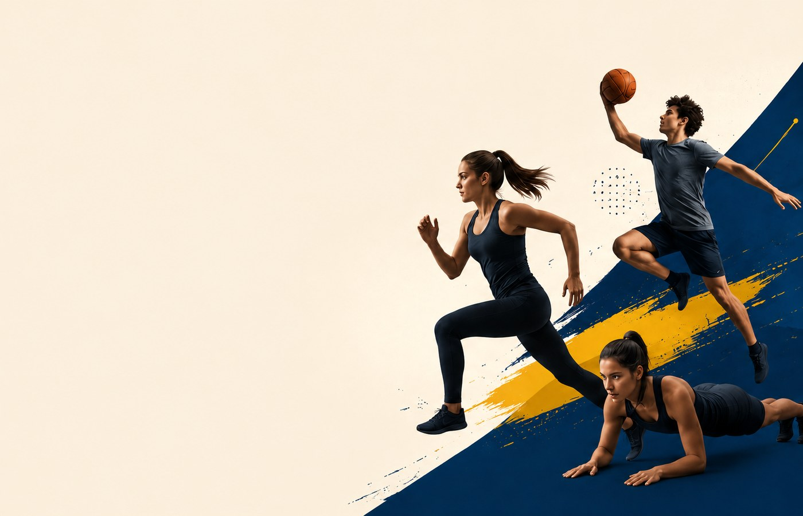

Bouge, apprends, dépasse-toi !
Bienvenue dans ton espace ressources pour progresser, t'informer et te motiver au quotidien en EPS et au collège.

Ce que vous allez trouver ici
Le fonctionnement d'un cours d'EPS
Règlement EPS, tenue exigée, règles de fonctionnement, programmation, modalités des dispenses, fonctionnement de l'Association Sportive et fiche d'inscription.
Vos activités, niveau par niveau
Pour chaque activité sportive travaillée de la 6ème à la 3ème : les attendus en lien avec les textes officiels, ce qu'il y a à apprendre, les modalités d'évaluation, le règlement de l'activité pratiquée, des vidéos et des quiz d'entraînement.
La culture sportive
Les grands groupes musculaires et comment les étirer, les étapes d'un bon échauffement, l'alimentation et l'hydratation du sportif, la fréquence cardiaque et les zones d'effort : des connaissances utiles quel que soit ton niveau.
L'AS Futsal
Tout pour mieux connaître l'activité : le règlement du futsal (terrain, joueurs, gardien, règle des 4 secondes), les fautes et les sanctions, le calendrier des entraînements et des compétitions, et comment devenir jeune officiel — arbitre ou juge — avec un quiz d'entraînement.
La vie de collégien en 6e
Ma rentrée (ENT, Pronote, écrire un mail), ma vie au collège (mon sac, mes déplacements, mes absences), 10 fiches méthodes de travail travaillées en Devoirs faits, les interlocuteurs du collège — et un espace parents pour Pronote, les absences et les rendez-vous de l'année.